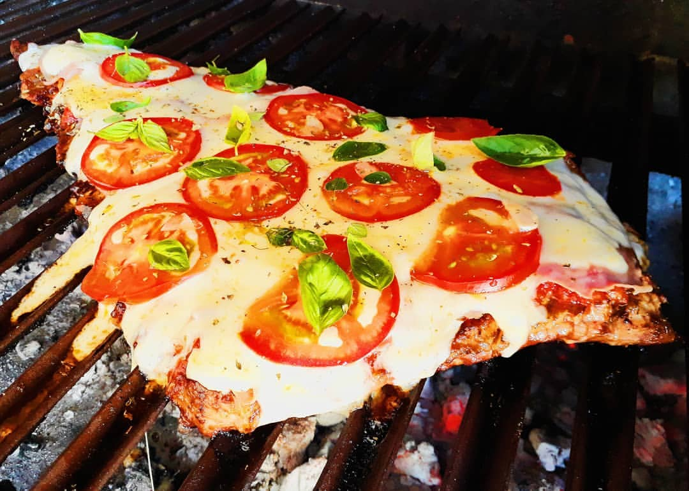

Receta de Matambre a la Pizza

El matambre es un corte de carne de vaca típicamente argentino, aunque en otros países de se puede llegar a conseguir como falda. Es un corte versátil y muy muy sabroso. Este corte es una lonja de carne que se encuentra entre el cuero y las costillas, es chato y amplio. Es especial para arrollarlo o hacerlo a la parrilla a modo de matambre a la pizza, como la receta que les traigo hoy.
Como casi cualquier otro corte de carne el matambre puede disfrutarse a la parrilla, como parte de un asado. Se abre a la mitad y se cocina con la grasa hacia arriba. Queda súper crocante y delicioso!.
Preparación
Desgrasar el matambre lo más posible y ponerlo en una olla con la leche, el caldo de verduras, sal, pimienta, ají triturado y la ramita de romero. Dejar a fuego bajo por 2 horas. Este es el secreto para que el matambre a la pizza quede tierno, tan tierno que se deshace!
Picar la cebolla, el pimiento rojo y los ajos. Saltear en una sartén con aceite de oliva. Agregar la salsa de tomate. Salpimentar y condimentar con ají molido y orégano. Reservar.
Una vez que el matambre esté listo, colocar en una asadera con un poco de tuco. Poner al horno en fuego medio por 5 minutos.
Sacar del horno y agregar el resto del tuco, las fetas de jamón y el queso cremoso. Llevar a horno hasta que se derrita el queso. Agregar los dos tomates en rodajas y llevar a horno 5 minutos más.
Al sacar del horno finalizar con las aceitunas y orégano espolvoreado por encima y listo! A disfrutar mis queridos, matambre a la pizza delicioso!